School: Informatics Computer Institute
First Personal Project
Project title: "My Anime Website"
Description: this project can help people watch anime by clicking the picture on home page, and also if you they want
to know the content or other related to the anime they can see it in the description page, also clip to see the highlights of anime that they want to watch
lastly the ratings, if it is worth to watch
tools: I used github on this, and Vscode
if you have a load visit it!
Visit!! TAP HERE TO SEE!
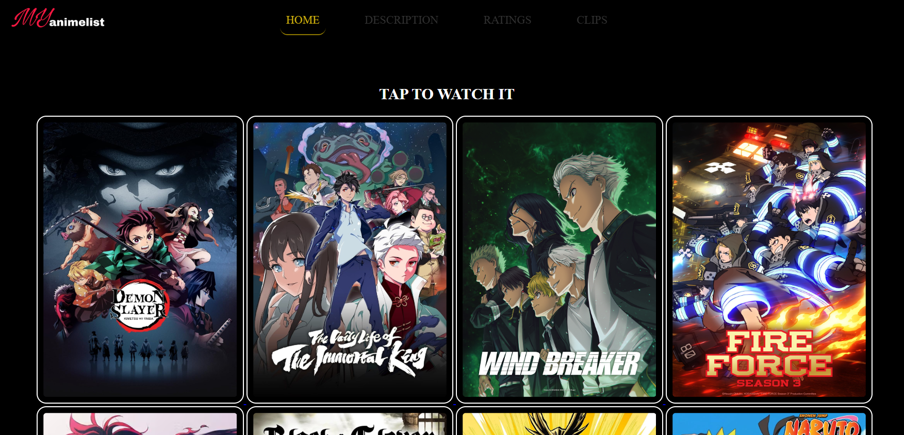
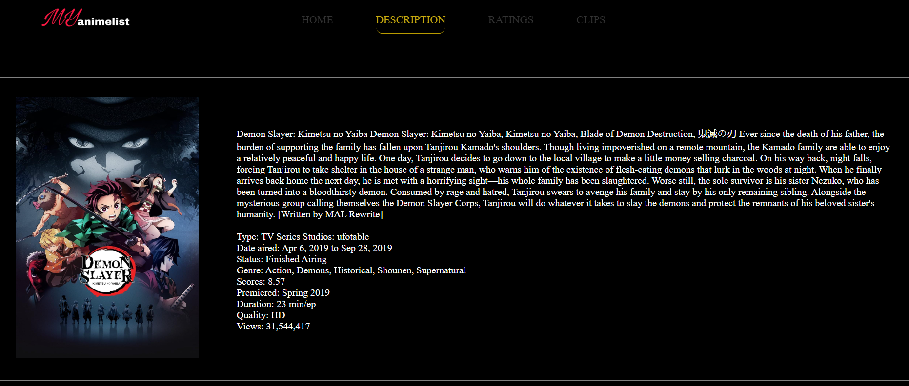
School:Informatics Computer Institute
Group Project
Role: Primary Programmer(90% of project code are mine)
Project title: "Tata food Delivery"
Description: Tata Eatery is a food delivery website where customers can browse food, place orders, track order status, and manage their accounts. It also includes an admin panel for managing products, customers, orders, and sales.
tools: Vscode, XAMPP
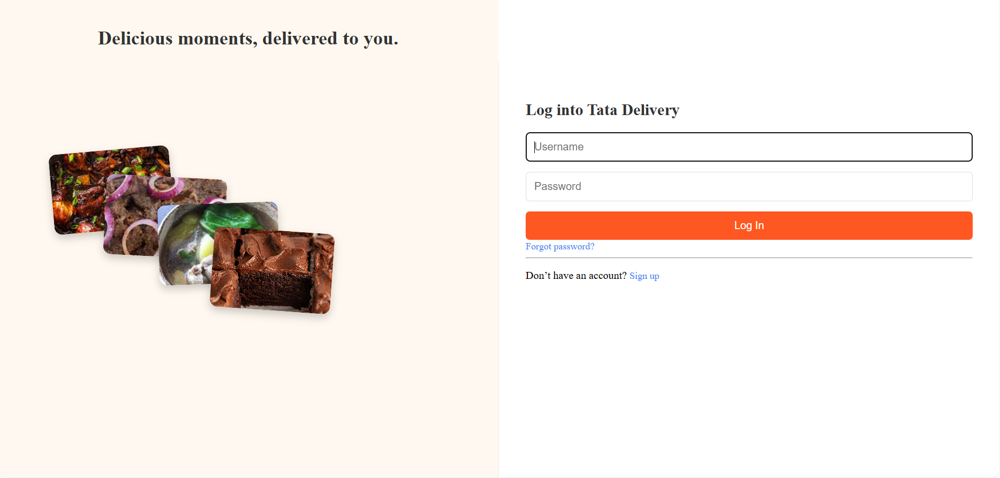
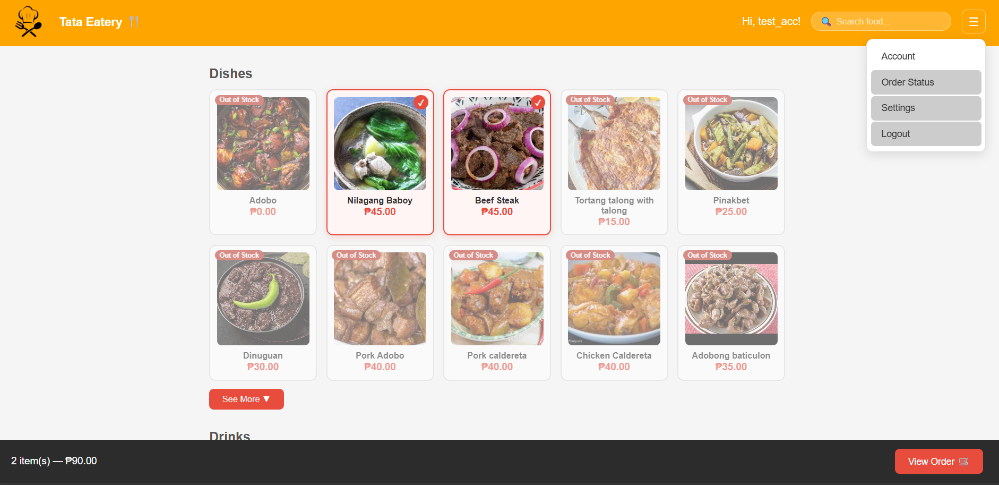
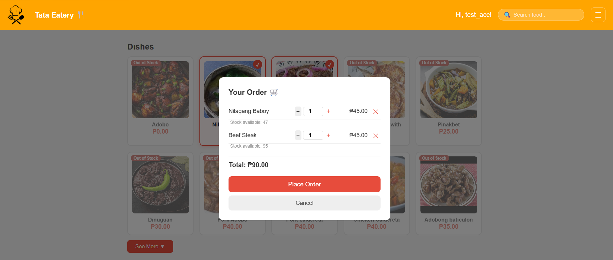
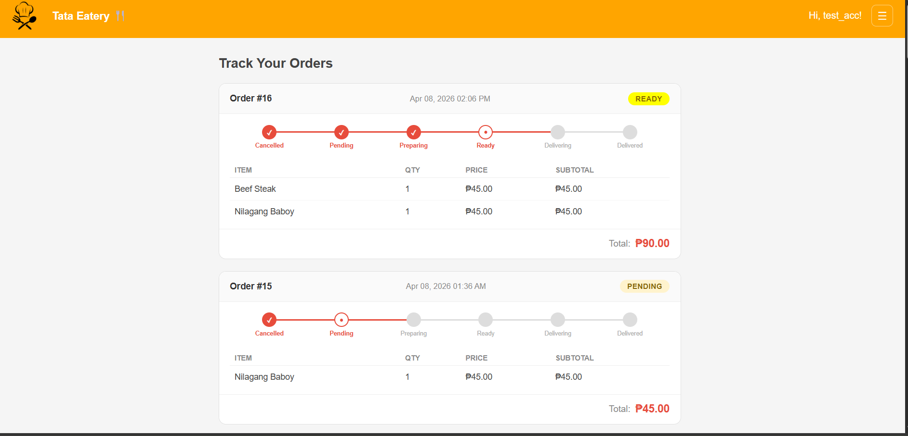
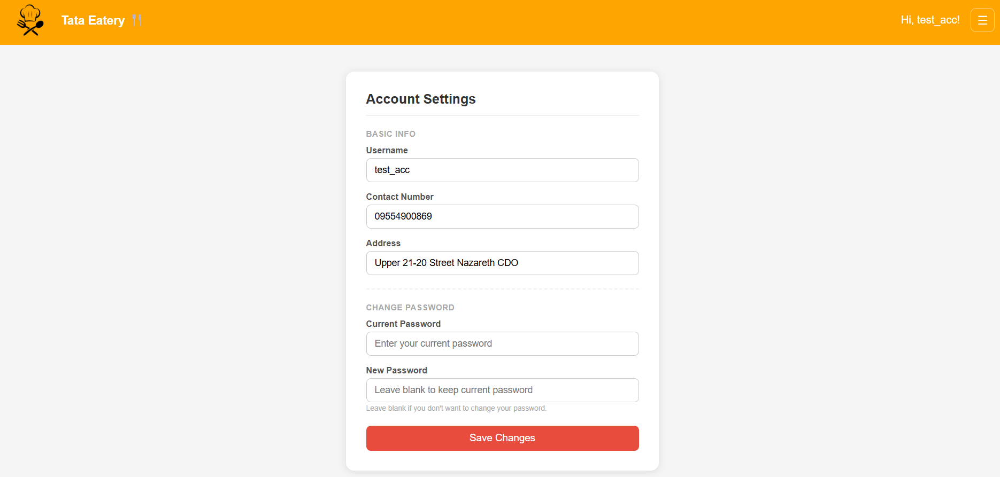
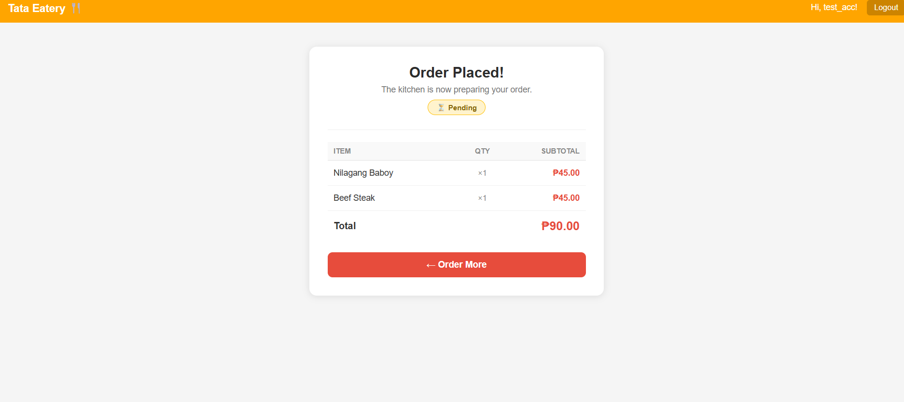
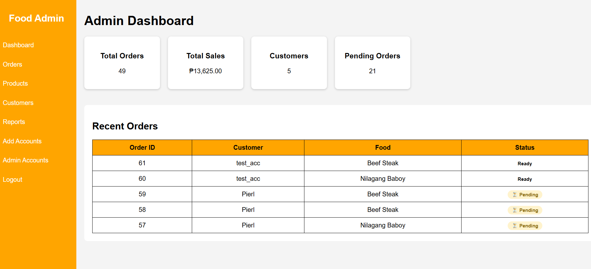
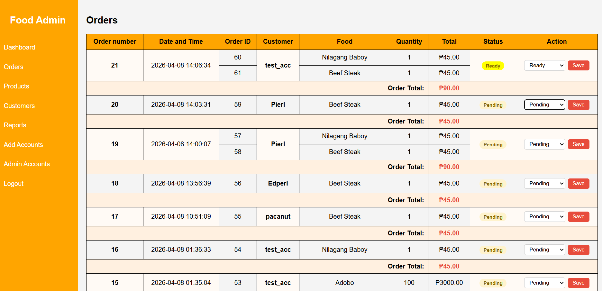
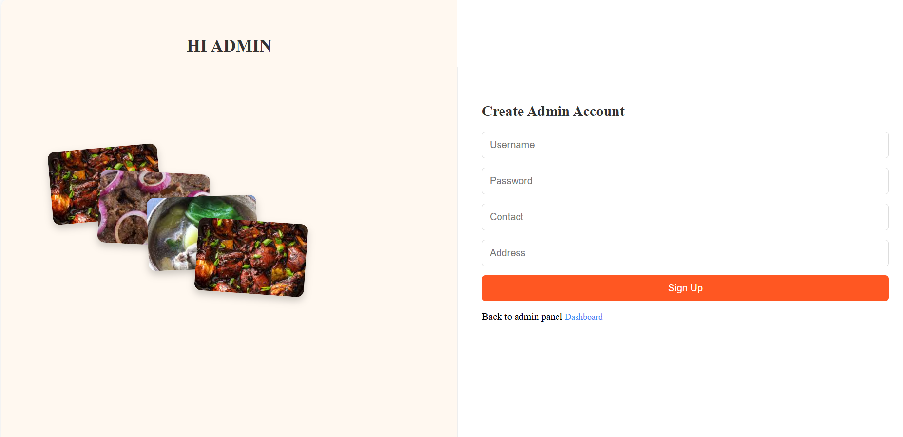